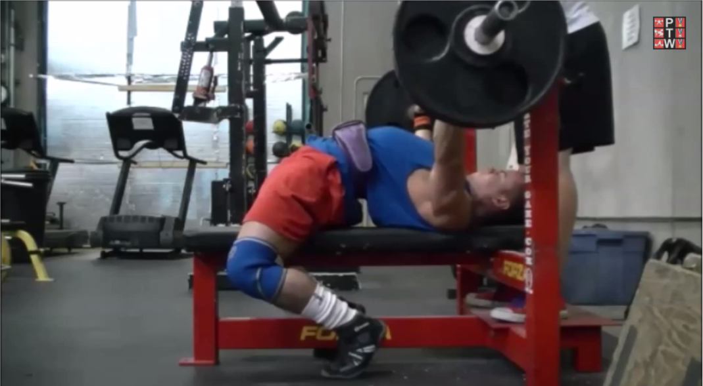
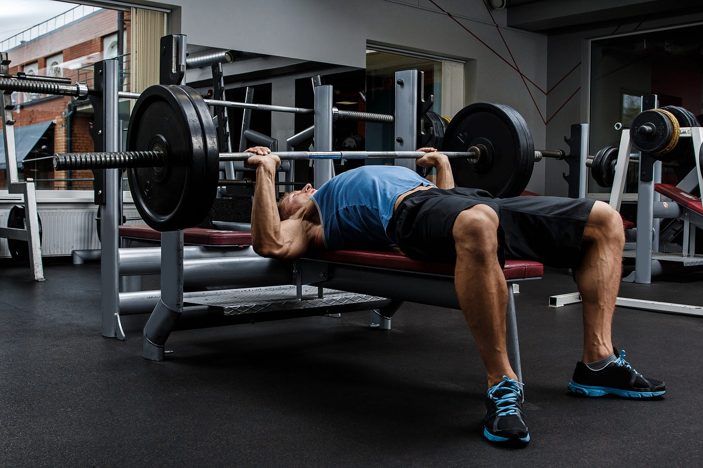

There are a lot of ways to define correct form. As long as your prefered method adheres to the rules of the lift to make the attempt valid, than the execution does not matter as much. The rules to be followed include, obeying "bench", "press", and "rack" commands from the head judge, and having 2 points of contact on the bench, 2 points being your glutes and upper back, at all times. The repetition itself is considered paused which makes it difficult unless trained specifically. The distance that the weights travel does not have any consideration on whether a repetition counts within competition, that is why there is a disconnect on powerlifting form and typical traning form. There are instances where during competition the weight travels within 2 inches and is considered a full rep by judges.
Unrack the Bar: If the bar is on a rack, lift it off and hold it directly over your chest with your arms fully extended. If you have a spotter, they can help you with this step for safety.
Lower the Bar: Lower the barbell in a controlled manner to your mid-chest, keeping your elbows at around a 45-degree angle to your body.
Press the Bar: Once the bar lightly touches your chest, press it back up to the starting position, fully extending your arms without locking your elbows.
Breathe: During the repetition, try not to Breathe as intraabdominal pressure is usueful in correctly driving the bar.
Rack the Bar: Once you have completed your set, carefully rack the bar back on the bench press rack.